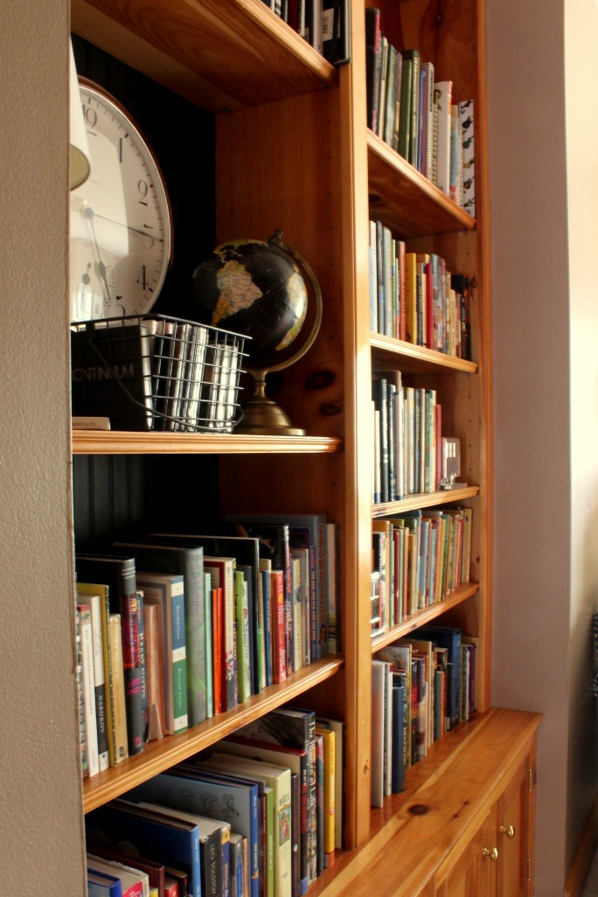
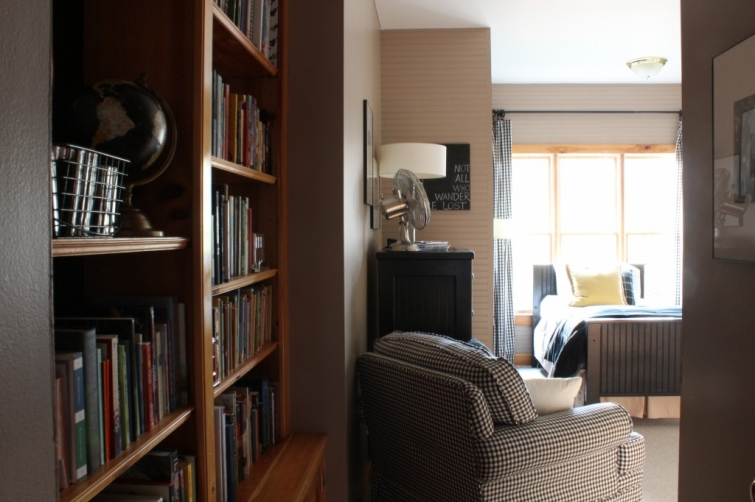

.png)
.PNG)
.PNG)
.PNG)
.PNG)
.PNG)
.JPG)
.JPG)
.PNG)
.PNG)


When we looked at bedrooms for guys the other day I said I would share photos of our sons’ bedroom the next time. Well… this is “the next time” and these are the befores– or at least I hope they are. That would imply that there is to be an after at some point down the road. 🙂 Let me give you a little information about this room as we go through it. Several of you had smartly suggested that I take into account my son’s interests in planning a redo of this room. My son’s biggest interest is reading reading reading, so there are built-in bookcases for him. He has soooooo many books that we really need more bookshelves. This is what you see when you enter the room.

The bottom cabinets are also filled with books. There are books under the bed, books in the closet, and books of his in other rooms of the house. Let’s walk further into the room so that you can see the layout a little better. I don’t necessarily have to keep that black and white checked chair in there. As much as I like it there, it could be traded for another chair that we have in the great room (but this one is more comfortable.)

This is the present twin sized bed he has had for a very long time. He had shared this room with his older brother since we moved in here. The beds were originally bunkbeds from Cargo. They had a horizontal rail design, but I eventually asked my husband if he would dismantle the bunks and add beadboard to the rails to make it look more substantial. This bed is the one that is going to be replaced by a queen sized one, but as of yet, I have no frame for it.

The other day I mentioned that the bedroom from The Lettered Cottage was the best match for the feel and layout of the room. Just for fun I thought you might like to see how the two spaces compare.

This room is L-shaped. Our oldest son that used to share the room here has a place of his own now, but we still need to leave another bed in the room for when he visits.

I have to tell you the story of that desk. I am so not a yard sale person, but my mom is the queen. When I shop, it is usually to find something specific, and I hate looking through things to find what I am after. I don’t even like shopping in Macy’s or other big department stores because there is soooo much to look at. (I do shop in Target because I know exactly how the store is laid out. 🙂 ) So going to yard sales is not something I enjoy doing.

Anyway, when our oldest son got his first apartment, there was a weekend when seemingly everyone in this county had a yard sale. My mom suggested that we look for furniture for him at these yard sales. So early that Saturday morning, we pulled into our first neighborhood, and began walking up to the first house we stopped at. As we were walking up the driveway, I spotted the desk sitting outside the garage and I knew it was something good. I yelled, “How much is that desk?” They yelled back, “$75.” I then again yelled, “I’ll take it!” My mom rolled her eyes as if to say That is not the way you do at yard sales, and she whispered, “I bet you could have gotten them to come down some off that price.” 🙁

When I got up to the owner, he told me that the desk was an antique postman’s desk, and it came with its original stool. (I wish they still had the letter cubbies that would have been atop it.) It came out of a general store in Georgia that is now a museum. Isn’t that cool? We were in a car at the time, so I paid him and told him to hold it until we could get back after lunch with a truck. I didn’t find another thing to buy that whole day. Guess I used up all my beginner’s luck with my first (and only) purchase!
Well, my husband and I went back to get it in a truck that afternoon. When we walked up to the owner he said, “Man! I could have sold that thing for 4 times what you paid ma’am! I had 3 different customers and an antiques dealer who all offered over $300 for it.” Thank goodness I got it when I did!
So that is the story of the desk. I offered it to our oldest son, but he did not want it. That is why it is presently in here. Finding room for it and the queen bed (and the dresser and other bed and nightstand) are the reasons that the room is going to need some major furniture rearranging. Across from it is a chalkboard wall.

Both of our sons want to travel, so that is why you see all the globes and map-related things in the room – hopefully reflecting some of their interests…although both will quickly tell me, “Mom, I don’t care what you put in there. Put what you want.” Even though they say that, I do agree with you all that it should show some of their/his interests.
So that takes you around the room, and it finishes all the “before” pictures I wanted you to see. As I said previously, this project is on hold until after the holidays. That will give me some time to think about what we need to do in there. The furniture arrangement is my biggest dilemma right now. I am open to all suggestions!
Remember, leaving a comment on the post will automatically enter you in the drawing for the giveaway of the Williams Sonoma pumpkin cupcake mixes this Saturday night!

hoping to hear from you,
**Giveaway has closed. Winner announced 11/12/12


.PNG)
WOW! Look at all these commenters! You are doing well!
I LOVE that desk and I’ll give you $300 for it hahaa!!
Come see my schoolhouse finds 🙂
LOVE the wall color. Mind sharing what paint it is?
I love this room. Your garage sale desk was the deal of a lifetime! You should go more often.
I understand the need for a bigger bed as boys grow taller and off the twin! Love the books and feel of the room. My daughter wants a library like Belle on Beauty and the Beast..she said that at age 5. She’s almost 20 and has collected and read old hardbacks ever since! Yay for readers! I wouldn’t change much. Maybe just your favorite new paint? Can’t wait to see the new re-do!
Do you mind sharing who makes or sells the metal fan. Love it!
Pretty dang nice room to be a “before”….love the neutral colors and that chalkboard wall!
Okay, Kelly, can I just say that I would’ve never believed that was the before!!! It truly looks like the after. I love the check chair and curtains, the chalkboard wall, and all of the beadboard. It has so much character and already feels so much like your boys with reading and traveling (from what you said). Also, my favorite part is probably the art that says, “Not all who wander are lost.” I recently got a bracelet with this quote on it and I wear it every day. I love it!
Love your decorating style.
This is my first time to your blog and I adore your boys’ room! To me, it’s perfect and I couldn’t imagine changing a thing : ] But I know we all go through decorating stages. Great use of space. Smart and sophisticated room!
Kelly,
Other than wanting a larger bed, I like the room. I like the black and white check chair and the bookcase. The desk you found is fabulous, I’m sure some day one of your boys will want that desk. It’s really cool.
I hope you can find a bed and the other pieces you want, will you leave the 2nd twin or replace that with a queen as well?
Karen
I know when you see a room day in and day out, you can grow tired of the way it is. But, this room really looks great the way it is! And I love that your son is a reader and proud of it. It looks like the perfect spot to lose yourself in a great story.
I love that room! What a peaceful place to read and relax and the lighting is fabulous! That desk is to die for! A fantastic find!
Can’t wait to see how you transform it. And BTW, out board and batten painting will be complete this weekend. Now onto another project !
I SEE THE SPOT YOU ARE IN, SO LET ME DO YOU A FAVOR AND TAKE THAT DESK OFF YOUR HANDS. LOL . I AM SURE WHATEVER DESIN YOU CHOOSE WILL BE EYE CANDY.
Oh please tell your mom anytime she needs a yard sale buddy to call me… She took you to a hotspot!:)
I love the black and white chair! I also LOVE the desk – such a cool item that you know the history behind.. See you soon!
Kelly,
I really love the room but understand your desire for change. I also love Layla and Kevin’s old office/guestroom too!
I always start by clearing the room out and then assessing what space I have and what furniture will then fit the space(I borrow huddy’s tape measure). My major advice is leave the bookcase in the entrance of the room as is. Those books are awesome (says the Reading Teacher)! Then if you do something similar to the Palmer’s room you could also get a Queen bed with built in storage under it. Good luck and keep us posted! I know it will have your special style.
Hi Kelly,
OK the first thing I noticed were the books, of course (my librarian heart went pitter patter!) and then that gorgeous desk. Oh my! I too am not a garage sale person but this has inspired me to maybe hit the sales this weekend. Oh, to come across a treasure like that.
Now I am going to be totally unoriginal and have to repeat, yet again, what everyone else is saying – It is a wonderful room as it is. I agree with Kathy R when she so succinctly stated: “You are kidding, right? I think this is an “after” and you are testing us!”. Getting a queen size bed is a must for your guy, of course – gotta have room to stretch out during those Saturday morning sleep-ins!
The only thing I might suggest, since you will be tight for space is either a smaller chair or try taking the chair out altogether- I bet you could count on one finger the number of times your boys have sat in it 🙂
Perfect room! Oh yes, and the blackboards are brilliant! Your son may begin to find some great quotes in his reads that he might want to write down. Love it – wish I had done that in my son’s room when he was an adolescent/young adult.
Take care
Cath
i’m going with the majority and saying how wonderful this room already looks but i can understand his need for a larger bed…i’m pinning lots of your pics for my 8 year old grandson’s room which we hope to tweak sometime next year…especially that chalkboard wall.
i’m off to gatlinburg on saturday for a week with my sister! lots of girl talk, eating, shopping and just enjoying being together ahead.
I love this room! I can see why you might want to change the bed size. Whatever you do, don’t get rid of that desk and stool. It is a rare find at a yard sale. I think one day one of your children will come around and treasure that piece. Thanks for the tour. Wonderful room!
What a great idea for the Cargo beds – we have a set as well. I hate to get rid of them and this would be a great update. Our son may be moving home, so I am loving this series of posts.
Change the bed and a few accessories to make you happy. The room is awesome as is! Seriously, I love it!
Kelly, I agree with some of the other comments, this room is so great! So many things I love. The bookshelves are wonderful, the chair, the chalkboard wall! So funny how it matches the room in many ways from TLC. The story of the desk is great too! Thanks for sharing the pictures. Enjoyed looking at them. You have such great taste and a beautiful home.
What a beautiful desk! I would say you lucked out and I wouldn’t
let it go. I think the room looks good as it is but I’m looking fforward to seeing any changes you make. I love your home!
Wow! I cannot imagine wanting to do anything except put in a larger bed. I love, love, love that desk! I also love the color palette. You are kidding, right? I think this is an “after” and you are testing us!
Beautiful room. I have two teenage boys and it is all nice to be inspired to decorate there rooms in something other than sports themes. I am enjoying you wonderful blog.That Desk was a steal.
Kelly – I have to agree with the others that this bedroom is perfect the way it is!!!! I would not change a thing either! OK, maybe a larger bed, but that’s it! Once again, your home is beautiful! I love all of your ideas. We have the same issue here with books — we’d need book cases on every wall and while they look nice, they are a pain to dust! If you are looking for a project, come on over to my house!
Great space for a guys room. Good luck with the planning!
Hi Kelly, Wow, I love your “before” and it definately looks like an “after” to me too. I love the whole look. Black & white checks are a favorite of mine. You’ve got great taste!
I love the room! Your “before” looks like an “after”! I love the black and white checks. Can you leave one twin bed in there for his brother once you get the queen? Such a nice big room!
This is the before? I wish my befores…heck my afters looked this good. Cheers Frances
What a lucky young Man ! The room just says “COMFORT”. Pull out a book and put yourself in the country of your choice !
I understand what you’re trying to do..but seriously, that is already just a wonderful room. I have to pin that chalk wall to my pinterest under “books” because it really just says it all.
Books, books, books. Sounds like a 14-year-old I know. We weed them out once a year and give a bunch to the library. I bribe him with more books if he completes this activity. Cool desk. And no. That is not how you do yard sales.
Those are “before” pictures?! I would not change a thing but I understand you need to accommodate a larger bed. I love the colors and the bookshelves. Wish my son’s room was so clean and put together!
As a mail carrier, I can appreciate that lucky find you have in getting that desk. I love things like that. Thanks for sharing the “before” photos, it’s great that you can create such lovely spaces for your family.